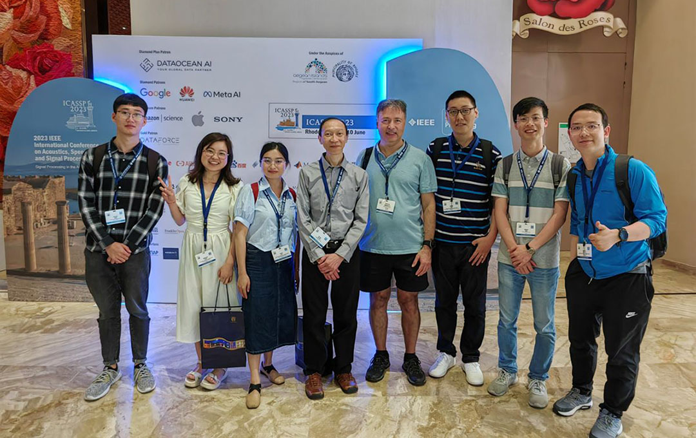
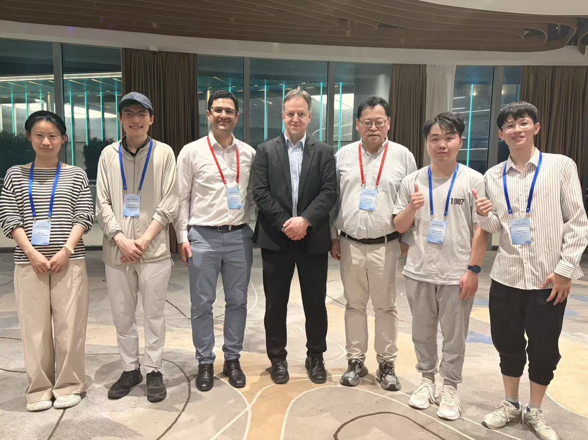
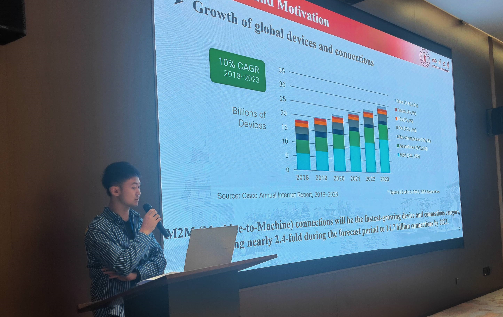
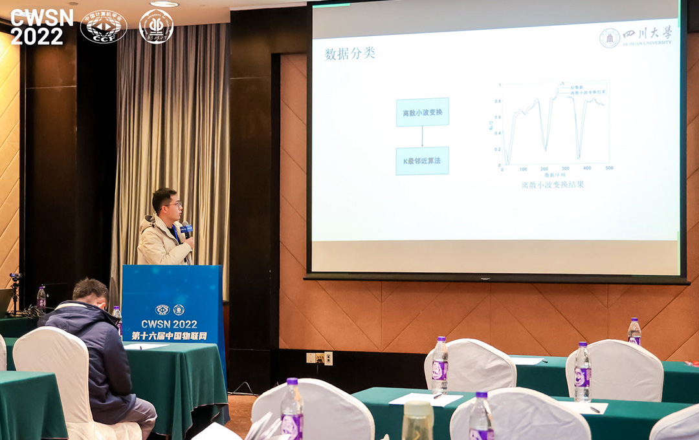
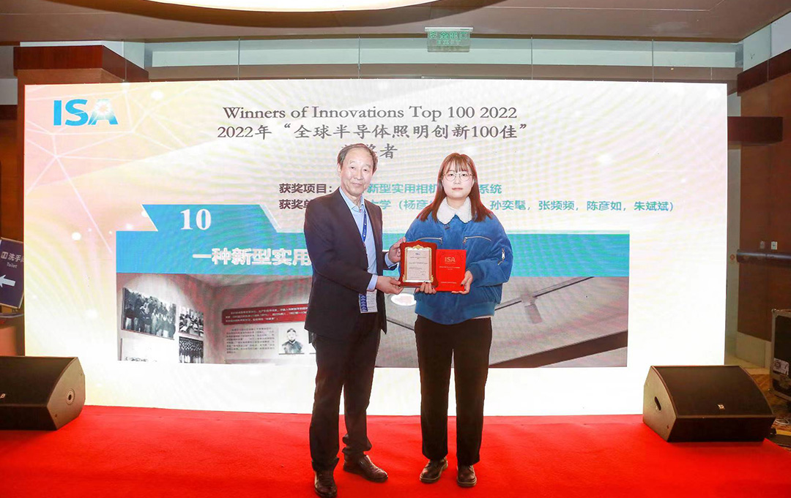
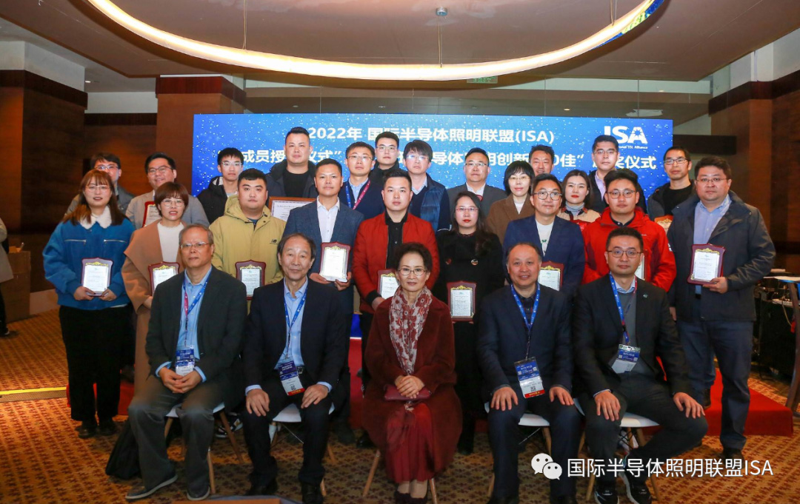

ADVANCED RESEARCH LABORATORY · 2026
Advanced Sensing · Communications · Edge Networks · Data Intelligence Sichuan University
感知万物 · 通联边缘 · 数据驱动未来
Advanced Sensing
可见光通信 · 通感融合
Edge Networks
Internet of Things
Embodied AI
Low-Altitude Intelligent Networks

国际声学、语音与信号处理会议 - 团队成员参会合影

课题组蒋忠仁同学参加智能计算与无线光通信国际会议并做报告

课题组博士研究生刘子威同学参加光通信与光电器件发展论坛并做报告

中国无线传感器网络会议 - 学术交流与成果展示

实验室荣获全球半导体照明创新百强荣誉

国际智能传感与 应用会议 - 前沿技术研讨